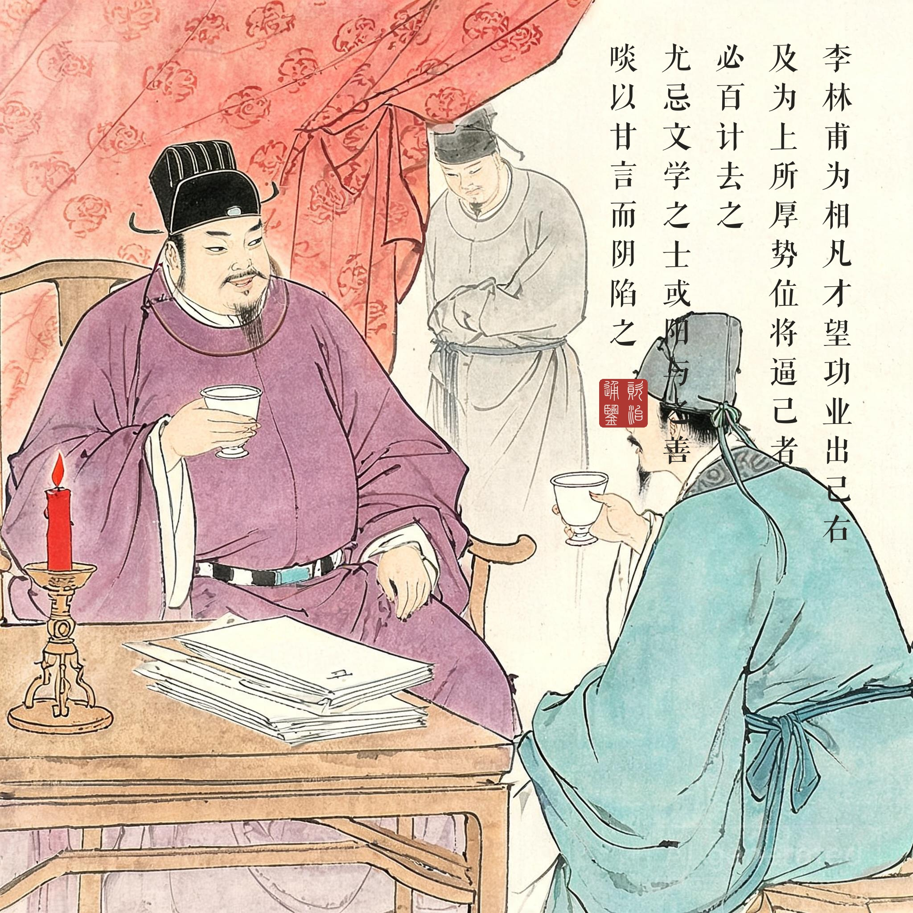
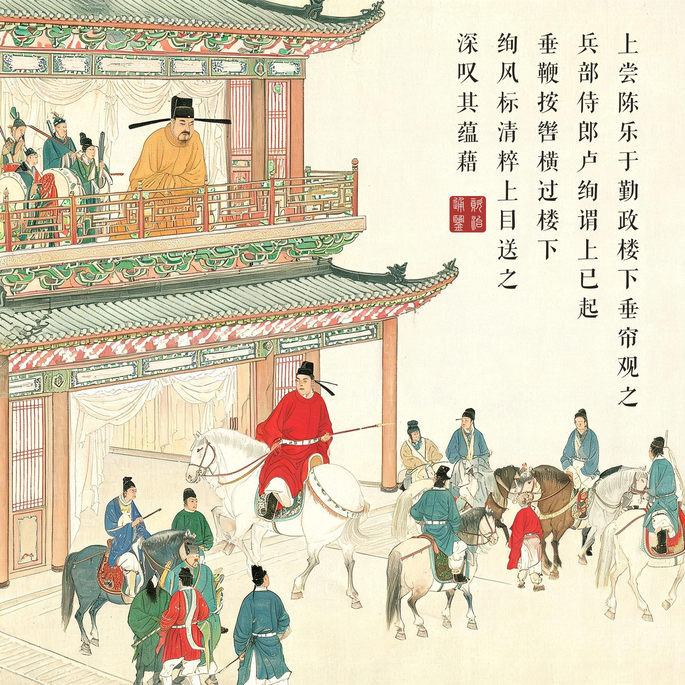
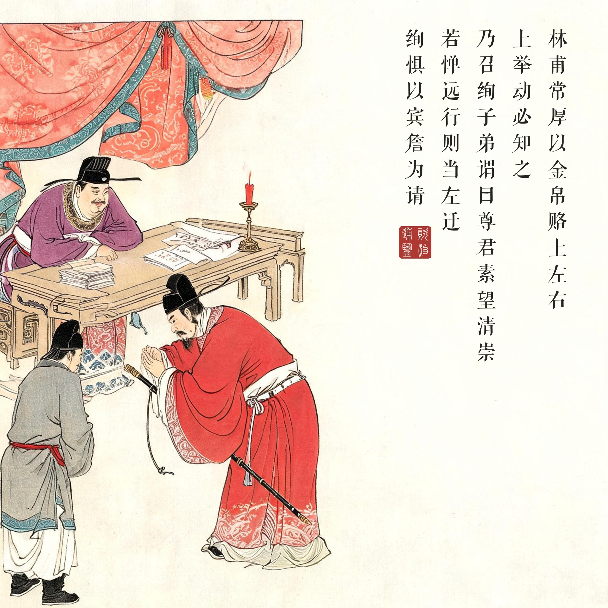
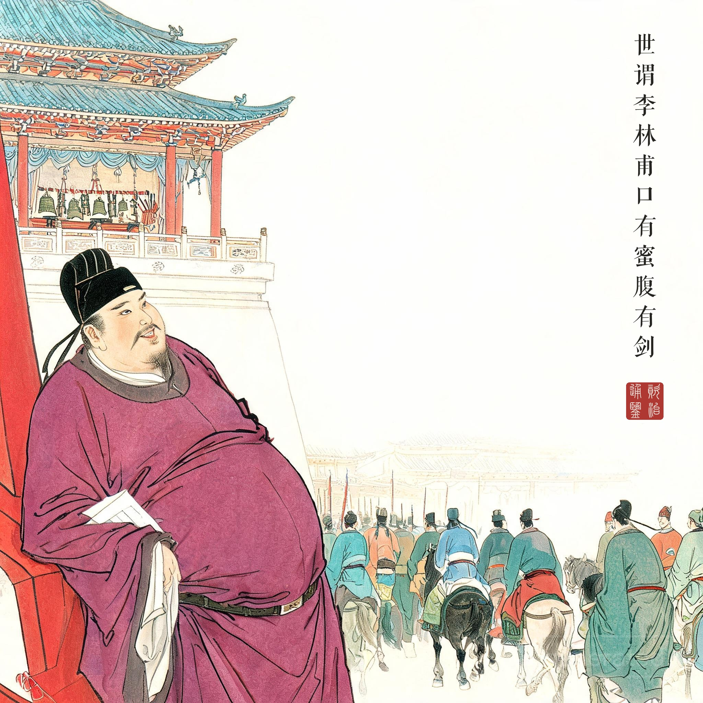

《资治通鉴 · 卷第二百一十五 · 唐纪三十一》玄宗至道大圣大明孝皇帝中之下天宝元年（公元 742 年）
（据 daizhigev20《资治通鉴》底本节录）
李林甫为相，凡才望功业出己右及为上所厚、势位将逼己者，必百计去之；尤忌文学之士，或阳与之善，啖以甘言而阴陷之。世谓李林甫“口有蜜，腹有剑。”上尝陈乐于勤政楼下，垂帘观之。兵部侍郎卢绚谓上已起，垂鞭按辔，横过楼下；绚风标清粹，上目送之；深叹其蕴藉。林甫常厚以金帛赂上左右，上举动必知之；乃召绚子弟谓曰：“尊君素望清崇，今交、广藉才，圣上欲以尊君为之，可乎？若惮远行，则当左迁；不然，以宾、詹分务东洛，亦优贤之命也，何如？”绚惧，以宾、詹为请。林甫恐乖众望，乃除华州刺史。到官未几，诬其有疾，州事不理，除詹事、员外同正。上又尝问林甫以“严挺之今安在？是人亦可用。”挺之时为绛州刺史。林甫退，召挺之弟损之，谕以“上待尊兄意甚厚，盍为见上之策，奏称风疾，求还京师就医。”挺之从之。林甫以其奏白上云：“挺之衰老得风疾，宜且授以散秩，使便医药。”上叹吒久之。夏，四月，壬寅，以为詹事，又以汴州刺史、河南采访使齐澣为少詹事，皆员外同正，于东京养疾。
李林甫做宰相，凡是才望功业超过自己的、被皇帝厚待的、权势地位将要逼近自己的，必定千方百计除掉；尤其忌恨有才学的士人，有时表面上对他友好，用甜言引诱而暗地里陷害他。世人说李林甫“口有蜜，腹有剑”。玄宗曾在勤政楼下摆设音乐，垂帘观看。兵部侍郎卢绚以为皇帝已经起身走了，垂着鞭、按着缰绳，缓缓骑马从楼下经过；卢绚风度仪容清雅纯粹，皇帝目送着他，深深赞叹他的蕴藉。李林甫常年用丰厚金帛贿赂皇帝身边的人，皇帝的一举一动他必定知道；于是召来卢绚的子弟对他们说：“令尊素来声望清高，如今交州、广州正需要人才，皇上想让令尊去担任，行吗？如果怕路远，就要被降职；不然，以太子宾客、詹事的身份去洛阳做分务官，也算优待贤者的任命，怎么样？”卢绚害怕，请求担任宾、詹。李林甫怕违反众望，就任命他为华州刺史。到任不久，诬称他有病，不能处理州政，改授詹事、员外同正。玄宗又曾问李林甫：“严挺之现在在哪里？这个人也还可以用。”严挺之当时是绛州刺史。李林甫退下后，召来严挺之的弟弟严损之，告诉他说：“皇上对待令兄的心意很厚，何不想个见到皇上的办法，上奏说自己得了风疾，请求回京师就医。”严挺之照办了。李林甫把他的奏章报告皇帝说：“严挺之衰老得了风疾，应该暂且授个闲散官职，方便他就医。”玄宗叹息了很久。夏四月壬寅，任命严挺之为詹事，又任命汴州刺史、河南采访使齐澣为少詹事，都是员外同正，在东京洛阳养病。
一套完整的除名工艺。本回的价值在于它不是漫画式的奸臣故事，而是一份可以复盘的操作流程：①识别威胁（皇帝多看了一眼）→②情报确认（内线回报“深叹其蕴藉”）→③方案设计（先吓后哄）→④执行（借子弟之口递话）→⑤收尾（外任→诬病→闲职）。严挺之那一单尤其精密：他的“病”是他自己上奏称的——受害者亲手填好了除名表格，李林甫只是转交。十九年里这条流水线输送了多少“病退”官员，史无全数，但洛阳城里成批的詹事、少詹事就是明证。恶的最高形态不是暴怒，是井然有序。
帘内与帘外。勤政楼那一幕是全回的画眼：玄宗垂帘观乐，卢绚以为帘后无人，放松了缰绳——整个天宝政治的结构就藏在这道帘子里。信息的单向透明（皇帝看得见你、你看不见皇帝）被李林甫接管后变成了双层的黑暗：宰相买通了帘边所有的人，皇帝的每一次心动都第一时间变成清除名单。开元盛世的人才流水线由此逆转为反向淘汰——“上目送之”这个善意瞬间，成了一句死刑判决。读画看第二幕：楼上一个目送的皇帝、楼下一个仪态从容的骑士、以及画面外那个已经收到消息的宰相——三重空间，一条命运线。
“口有蜜，腹有剑”为什么传千年。这八个字的传播力在于它的普适：李林甫的甜言从来不是伪善的失败，而是武器系统的制式装备。它精准描述了一种直到今天仍在职场存在的生物——先让你觉得他好，再让你消失。司马光把这句民谚放进《通鉴》正文（他极少采录俚语），等于替历史做了一个定性：制度的败坏，往往从语言的败坏开始。